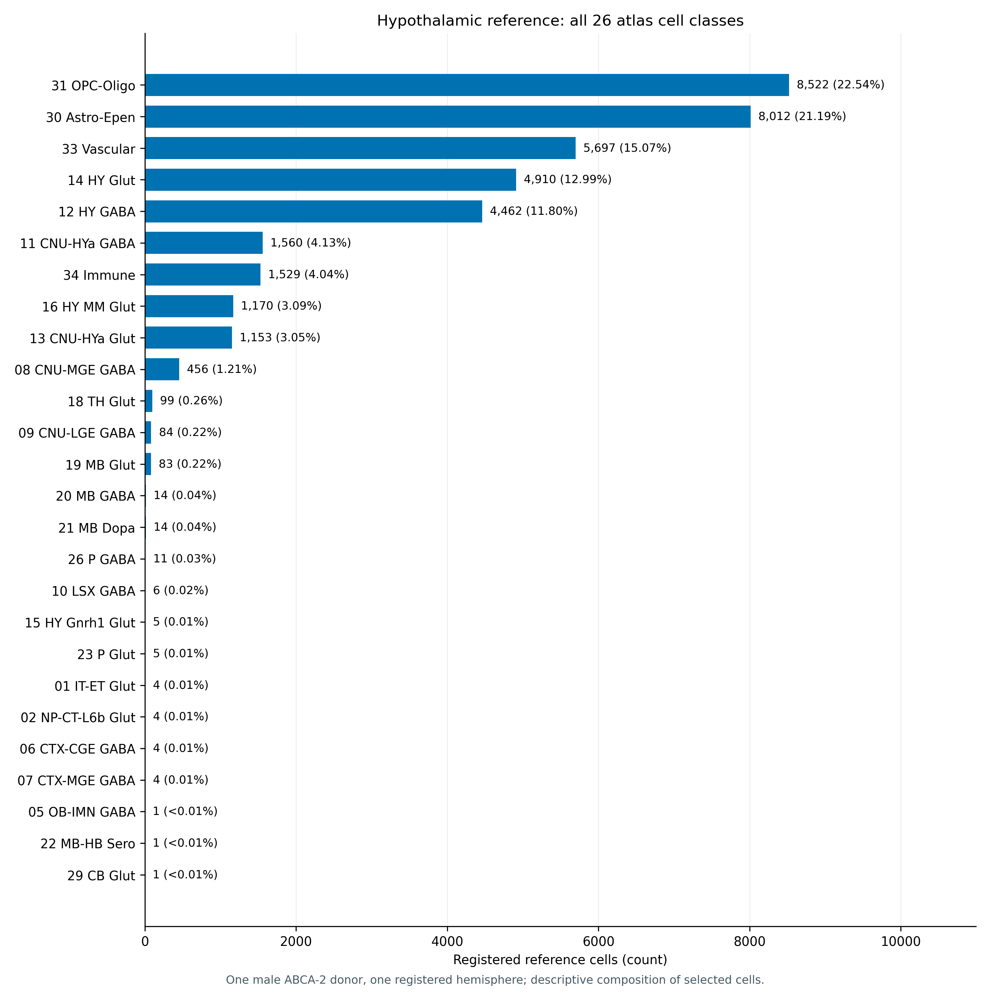
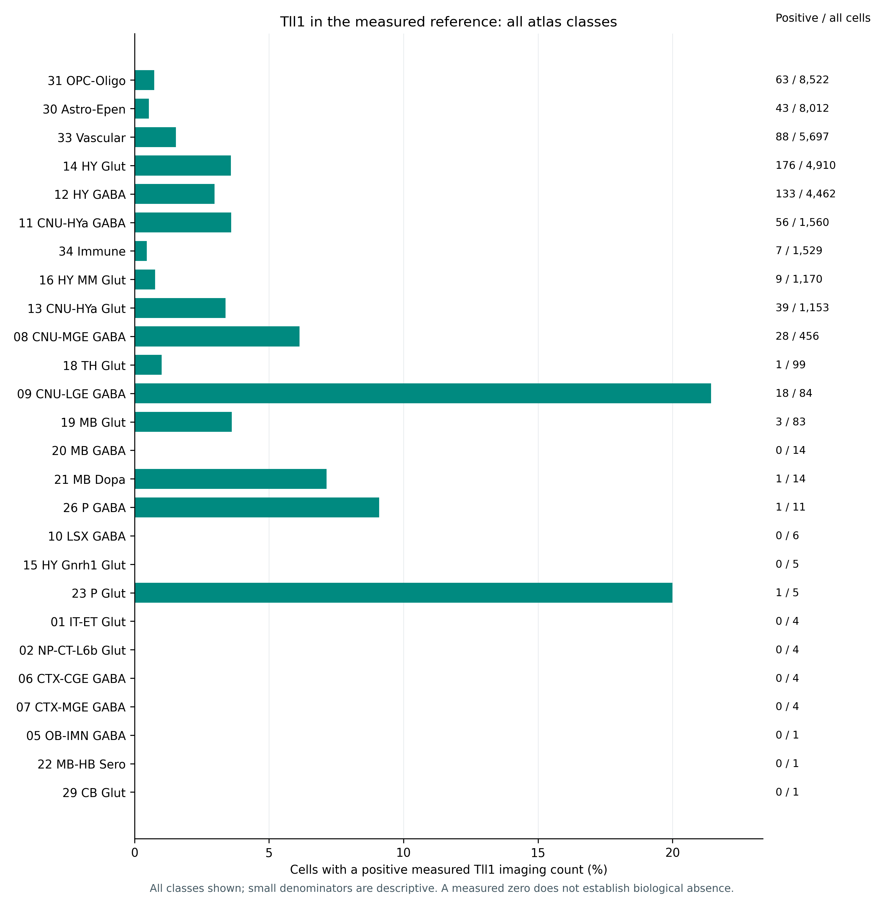
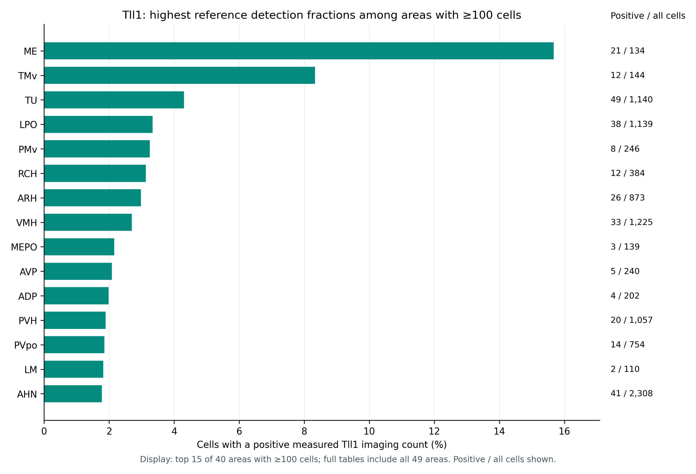

Reference donors1ABCA-2 · male · one registered hemisphere
Registered HY cells37,811All cells in the existing HY selection
Measured genes1,122Linear imaging counts; no imputed genes
Atlas classes / areas26 / 49Deposited labels retained
Descriptive MERFISH summaries from one male atlas donor
19 October 2026
The MERFISH atlas provides measured gene counts and anatomical positions from a reference donor without the study’s experimental PM2.5 exposure. Describing that reference addresses a different question from the bulk exposure analysis: which annotated cells and areas contain measured Tll1 signal in this selected reference? It does not determine which cells respond to PM2.5. The data originate from the whole-mouse-brain atlas of Zhang et al. (Zhang et al. 2023)
The analysis reuses the measured-count matrix and registered hypothalamic cell annotations underlying the linked 3D viewer. Exact string cell identifiers join the annotations to matrix rows; Ensembl gene identifiers determine column order. Duplicate or missing identifiers cause an explicit failure. All selected cells and all measured genes enter the summaries. The source atlas classes and CCF substructure labels remain unchanged.
For each class and substructure, composition is its cell count divided by all selected reference cells. For every measured gene, the mean is the arithmetic mean of linear imaging counts across all cells in the group, including measured zeros. A positive cell has a measured count strictly greater than zero; the detection fraction is the positive-cell count divided by that group’s cell count. No normalization to bulk RNA-seq units, log transformation, or expression imputation is applied to these summaries.
The Tll1 class plot includes all classes. The anatomical display shows the 15 highest detection fractions among substructures containing at least 100 selected cells; this rule limits the display, not the exported analysis. Complete tables retain every substructure, including small groups and unassigned labels. Substructures include nuclei and other anatomical areas, so they are not all distinct nuclei.
These are descriptive measurements from one donor. No cell-level differential test, clustering, p value, confidence interval, or exposure model is fitted. The cell count does not provide independent animal replication. The selected registered hemisphere also does not establish an unbiased whole-organ cell composition. Atlas class names are inherited taxonomy labels; a regional name within a class label does not replace a cell’s deposited HY location.
The selection contains 37,811 cells, assigned to 26 atlas classes and 49 deposited substructures. The largest class is 31 OPC-Oligo, with 8,522 cells (22.54%). The anatomical labels include 6,393 HY-unassigned and 3,518 ZI-unassigned cells; these are retained rather than reassigned to a named nucleus.

Tll1 has a positive measured imaging count in 667 of 37,811 cells (1.76%). Its arithmetic mean over all selected cells is 0.0217 imaging counts per cell. The fractions below use the exact class-specific denominators. Large fractions in a small class can arise from only a few positive cells and should be read together with those denominators.

| Atlas class | Cells | Positive-count cells | Mean imaging count | Detection (%) |
|---|---|---|---|---|
| 14 HY Glut | 4910 | 176 | 0.0448 | 3.58 |
| 12 HY GABA | 4462 | 133 | 0.0392 | 2.98 |
| 33 Vascular | 5697 | 88 | 0.0195 | 1.54 |
| 31 OPC-Oligo | 8522 | 63 | 0.00786 | 0.739 |
| 11 CNU-HYa GABA | 1560 | 56 | 0.0449 | 3.59 |
| 30 Astro-Epen | 8012 | 43 | 0.00574 | 0.537 |
| 13 CNU-HYa Glut | 1153 | 39 | 0.0408 | 3.38 |
| 08 CNU-MGE GABA | 456 | 28 | 0.0724 | 6.14 |
| 09 CNU-LGE GABA | 84 | 18 | 0.31 | 21.4 |
| 16 HY MM Glut | 1170 | 9 | 0.0094 | 0.769 |
| 34 Immune | 1529 | 7 | 0.00458 | 0.458 |
| 19 MB Glut | 83 | 3 | 0.0361 | 3.61 |
The table lists the classes with the largest numbers of positive cells, which is distinct from ranking the detection fractions. Neither ranking identifies a cell-specific exposure effect. A measured zero does not establish biological absence; detection also depends on the targeted assay, segmentation, and other measurement properties.
40 of 49 substructures contain at least 100 selected cells. The figure shows the 15 highest Tll1 detection fractions within that display-eligible set. The full table includes every substructure and all measured-zero groups. This is a within-reference descriptive ranking.

These summaries describe where Tll1 is normally measured in this reference donor. The separate PM2.5 scenario multiplies each reference count by the same bulk-derived regional factor. That operation preserves the reference detection pattern and cannot establish class-specific sensitivity, altered abundance, or cell loss. The reference summaries add anatomical context without adding exposed single cells or additional experimental animals.
---
title: "Spatial reference: composition and measured Tll1"
subtitle: "Descriptive MERFISH summaries from one male atlas donor"
---
```{python}
#| label: spatial-reference-setup
#| include: false
import pandas as pd
from IPython.display import display, Markdown
from _report_utils import summary, read_table, show_table, figure, metric_cards
s = summary("spatial_reference")
composition = read_table("spatial_reference", "composition_by_class.tsv")
classes = read_table("spatial_reference", "Tll1_by_class.tsv")
areas = read_table("spatial_reference", "Tll1_by_substructure.tsv")
```
## Introduction
The MERFISH atlas provides measured gene counts and anatomical positions from a reference donor without the study's experimental PM2.5 exposure. Describing that reference addresses a different question from the bulk exposure analysis: **which annotated cells and areas contain measured Tll1 signal in this selected reference?** It does not determine which cells respond to PM2.5. The data originate from the whole-mouse-brain atlas of Zhang et al. [@Zhang2023_38092912]
```{python}
#| label: spatial-reference-population
metric_cards([
("Reference donors", str(s["reference_donors"]), "ABCA-2 · male · one registered hemisphere"),
("Registered HY cells", f"{s['cells']:,}", "All cells in the existing HY selection"),
("Measured genes", f"{s['measured_genes']:,}", "Linear imaging counts; no imputed genes"),
("Atlas classes / areas", f"{s['cell_classes']} / {s['substructures']}", "Deposited labels retained")
])
```
## Methods
The analysis reuses the measured-count matrix and registered hypothalamic cell annotations underlying the [linked 3D viewer](viewer.qmd). Exact string cell identifiers join the annotations to matrix rows; Ensembl gene identifiers determine column order. Duplicate or missing identifiers cause an explicit failure. All selected cells and all measured genes enter the summaries. The source atlas classes and CCF substructure labels remain unchanged.
For each class and substructure, composition is its cell count divided by all selected reference cells. For every measured gene, the mean is the arithmetic mean of **linear imaging counts across all cells in the group, including measured zeros**. A positive cell has a measured count strictly greater than zero; the detection fraction is the positive-cell count divided by that group's cell count. No normalization to bulk RNA-seq units, log transformation, or expression imputation is applied to these summaries.
The Tll1 class plot includes all classes. The anatomical display shows the 15 highest detection fractions among substructures containing at least 100 selected cells; this rule limits the display, not the exported analysis. Complete tables retain every substructure, including small groups and unassigned labels. Substructures include nuclei and other anatomical areas, so they are not all distinct nuclei.
These are **descriptive measurements from one donor**. No cell-level differential test, clustering, p value, confidence interval, or exposure model is fitted. The cell count does not provide independent animal replication. The selected registered hemisphere also does not establish an unbiased whole-organ cell composition. Atlas class names are inherited taxonomy labels; a regional name within a class label does not replace a cell's deposited HY location.
## Results
### Cell composition of the selected reference
```{python}
#| label: spatial-reference-composition-text
largest = composition.iloc[0]
display(Markdown(
f"The selection contains **{s['cells']:,} cells**, assigned to **{s['cell_classes']} atlas classes** "
f"and **{s['substructures']} deposited substructures**. The largest class is "
f"**{largest['class']}**, with **{int(largest.n_cells):,} cells "
f"({largest.percent_of_reference:.2f}%)**. "
f"The anatomical labels include **{s['HY_unassigned_cells']:,} HY-unassigned** and "
f"**{s['ZI_unassigned_cells']:,} ZI-unassigned** cells; these are retained rather than reassigned to a named nucleus."
))
figure("spatial_reference", "cell_class_composition",
"All deposited atlas classes in the selected reference, ordered by cell count. Labels show exact counts and percentages of all selected cells. These are reference-selection proportions, not animal-level or population estimates.",
alt="Horizontal bar chart of all 26 atlas classes, with their selected cell counts and percentages.")
```
### Tll1 detection across atlas classes
```{python}
#| label: spatial-reference-tll1-text
t = s["Tll1"]
display(Markdown(
f"**Tll1** has a positive measured imaging count in **{t['positive_cells']:,} of "
f"{s['cells']:,} cells ({100*t['detection_fraction']:.2f}%)**. Its arithmetic mean over all "
f"selected cells is **{t['mean_imaging_count']:.4f} imaging counts per cell**. "
"The fractions below use the exact class-specific denominators. Large fractions in a small class "
"can arise from only a few positive cells and should be read together with those denominators."
))
figure("spatial_reference", "Tll1_detection_by_class",
"Positive measured Tll1 counts as a percentage of all cells in each of the 26 atlas classes. Exact positive/all-cell counts are shown; ordering follows class size. No inferential intervals or tests are calculated.",
alt="Tll1 detection fractions for every atlas class, with exact positive-cell and total-cell denominators.")
tab = classes.sort_values(["positive_cells", "n_cells"], ascending=False)[
["class", "n_cells", "positive_cells", "detection_fraction", "mean_imaging_count"]].head(12).copy()
tab["detection_percent"] = 100 * tab.pop("detection_fraction")
show_table(tab, n=12)
```
The table lists the classes with the largest **numbers of positive cells**, which is distinct from ranking the detection fractions. Neither ranking identifies a cell-specific exposure effect. A measured zero does not establish biological absence; detection also depends on the targeted assay, segmentation, and other measurement properties.
### Tll1 detection across anatomical substructures
```{python}
#| label: spatial-reference-area-text
display(Markdown(
f"**{s['substructures_with_at_least_100_cells']} of {s['substructures']} substructures** contain "
f"at least 100 selected cells. The figure shows the **{s['substructures_displayed']} highest "
"Tll1 detection fractions** within that display-eligible set. The full table includes every "
"substructure and all measured-zero groups. This is a within-reference descriptive ranking."
))
figure("spatial_reference", "Tll1_detection_by_substructure",
"The 15 highest measured Tll1 detection fractions among deposited HY substructures with at least 100 selected cells. Labels show exact positive/all-cell counts. All 49 substructures remain in the downloadable full table; the plot's selection does not imply significance.",
alt="Ranked Tll1 detection fractions among 15 hypothalamic areas meeting a minimum of 100 selected reference cells.")
```
### Relation to the regional simulation
These summaries describe where Tll1 is normally **measured in this reference donor**. The separate PM2.5 scenario multiplies each reference count by the same bulk-derived regional factor. That operation preserves the reference detection pattern and cannot establish class-specific sensitivity, altered abundance, or cell loss. The reference summaries add anatomical context without adding exposed single cells or additional experimental animals.
## Downloadable results
- [All class composition](downloads/spatial_reference/composition_by_class.tsv) and [all substructure composition](downloads/spatial_reference/composition_by_substructure.tsv)
- [All measured genes by class](downloads/spatial_reference/all_genes_by_class.tsv.gz) and [all measured genes by substructure](downloads/spatial_reference/all_genes_by_substructure.tsv.gz)
- [All measured genes across the complete reference](downloads/spatial_reference/all_genes_reference_summary.tsv)
- [Tll1 in every class](downloads/spatial_reference/Tll1_by_class.tsv) and [Tll1 in every substructure](downloads/spatial_reference/Tll1_by_substructure.tsv)
- [Exact substructures shown in the ranked plot](downloads/spatial_reference/Tll1_displayed_substructures.tsv)
- [Summary](downloads/spatial_reference/summary.json), [methods and input hashes](downloads/spatial_reference/methods.json), and [arithmetic validation](downloads/spatial_reference/validation_checks.json)